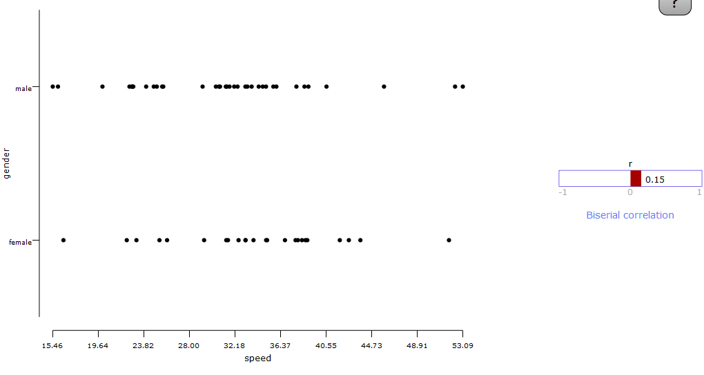
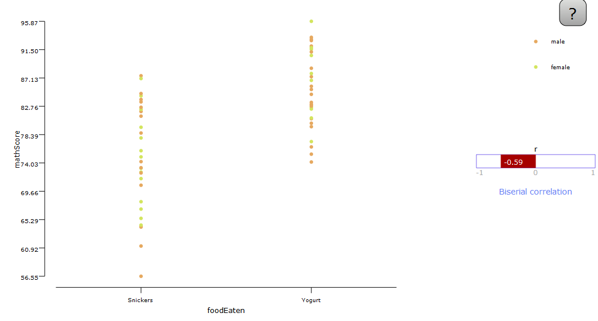

Biserial correlation coefficient is used to find correlation (the direction of change in one variable as the other variable changes) when one of the variables is binary (can take only two values). It has a range of -1 to +1. -1 implies that one variable decreases as the other increases (negative correlation) and +1 implies one variable increases as the other increases (positive correlation). 0 implies there is no dependence between the two variables.
Conditions:
- Between-subjects experimental design
- The dependent variable is in interval or ratio scale
- The independent variable is in nominal scale and is occuring artificially dichotomonous
Examples:
Example 1: In a text entry user study, two keyboard layouts (QWERTY and DVORAK) were compared in a between-subjects experimental design. As shown in the graph below, the measured task completion time were normally distributed in each condition, but their variance were radically different. This violates the assumption of homogeniety of variance of unpaired t-tests.

Example 2: In a study of Effect of Food on Test Scores, We compare the effect of different types of food on the participant' test scores. The foods considered are plain yoghurt, a snickers bar, and a sandwich. We measure the verbal (language) and the quantitative (math) scores of the participant. Since the same set of participants are used for different conditions (foodEaten), this experiment follows a within-groups design. Following the experiment, we also get the satisfaction rating from the participant. The gender of the participant is also considered as an independent variable.
